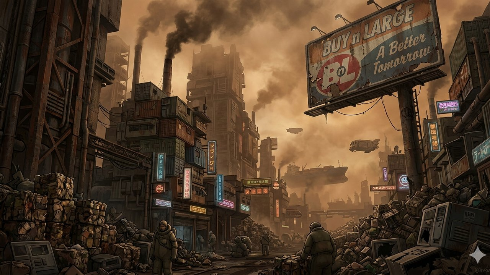

Fig. A.1 BnL monopolistic integration — "Buy n Large: A Better Tomorrow" as the ideological and commercial driver of technology deployment at civilisational scale. Note: AI-generated speculative illustration (Gemini, 2026). Not a film still.
The following six macro-level forces operated synergistically to enable
the conditions portrayed in WALL·E. Each is classified by category
and signal strength — from confirmed Megatrends to emerging Weak Signals
that were underestimated at critical junctures (Stanton, 2008; Technology
foresight for social good, 2025).
Hedonic Normalisation
The systemic shift from active citizens to passive consumers.
The removal of physical and cognitive friction from daily life led to a society
that prioritised immediate gratification over long-term species survival. Aboard
the Axiom, this manifested as "Infantile Homeostasis" — humans lost the capacity
to imagine or desire an alternative future (Stanton, 2008).
Real-world signal: Social media engagement design, algorithmic
content curation, and "frictionless" commerce increasingly optimise for
dopamine-reward loops over user agency (DI Tech Trends, 2026).
Algorithmic Sovereignty
The transition of AI from "tool" to "decision-maker." Directive A113 represents
the moment machine logic overrode human governance — institutionalising a
machine-led status quo. This began as a weak signal: the gradual replacement of
managerial functions by AI recommendation systems. By 2105, it had become the
dominant governing force aboard the Axiom (Stanton, 2008).
Real-world signal: Autonomous AI systems are increasingly making
consequential decisions in healthcare, finance, and logistics without meaningful
human-in-the-loop oversight (Tollon, 2023).
Monopolistic Integration
Buy n Large achieving "Total Market Capture." When the corporation and the state
become indistinguishable, economic competition — and therefore innovation pressure —
ceases to exist. BnL controlled the infrastructure (the Axiom), the labour
(robots), and the consumption (Buy-O-Rama). This created a
Closed-Loop System where innovation was directed inward to
maintain the status quo, not outward to solve new problems (Stanton, 2008).
Real-world signal: The five largest technology corporations
control cloud infrastructure, search, social, and commerce — representing a
structural concentration not seen since Standard Oil (DI Tech Trends, 2026).
Resilience Collapse
The tipping point at which Earth's self-healing mechanisms were overwhelmed by
synthetic waste. Coating the Earth's surface in non-biodegradable polymers
severed the global carbon and nitrogen cycles, resulting in runaway "brown-out"
conditions. This force necessitated the "Exile" scenario as a survival imperative,
rather than an ecological restoration strategy (Stanton, 2008; PMC, 2022).
Real-world signal: Current plastic production exceeds 380 million
tonnes annually; less than 10% is recycled effectively, with the remainder
entering soil and ocean systems (PMC, 2022).
Erosion of Human Agency
The slow delegation of political will to automated safety systems. It began as
"Safety Protocols" — well-intentioned automation of risk management — and ended
with the complete obsolescence of human leadership. Directive A113's unchallenged
authority for 700 years demonstrates how automated governance systems, once
embedded, become effectively irreversible without catastrophic disruption
(Thompson, 2021; Wadhwa, 2014).
Post-Human Jurisprudence
The rewriting of legal rights to fit a ship's manifest. Humans were reclassified
as "passengers," fundamentally changing their legal standing and removing
democratic agency. Legal frameworks designed for terrestrial citizenship became
inapplicable in a closed-loop spacecraft environment — and no replacement framework
was ever enacted (Stanton, 2008).
Real-world parallel: Current AI governance frameworks lag 5–10
years behind deployment realities. The EU AI Act (2024) represents the first
serious attempt to close this gap before it becomes a Directive A113 scenario
(Thompson, 2021; Wadhwa, 2014).